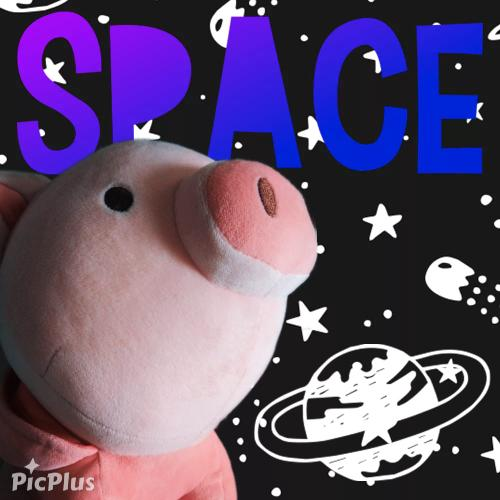
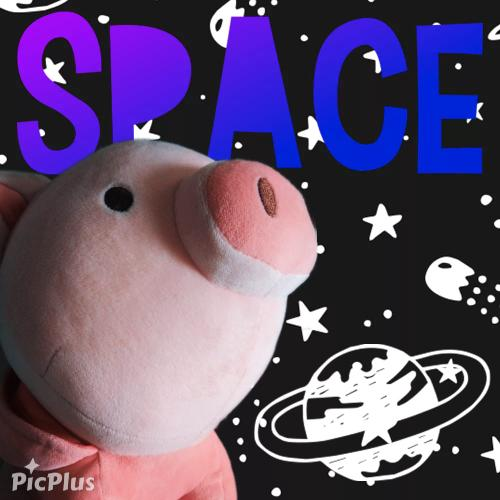

Si deseas observar más imágenes de cerditos, da click en este enlace.
3 cosas que los cerditos AMAN:
3 cosas que los cerditos ODIAN:
Compártenos:
¿Tu cerdito es cría o adulto?
¿Qué tipo de personalidad tiene tu cerdito?

 
